Regression analysis (OLS method)
Last modified on 2022-09-09
Packages used in this tutorial:
library(car)
library(boot)
library(scatterplot3d) # Used to extract p-value from logistic model1 The simple model
The objective of statistical modeling is to come up with the most parsimonious model that does a good job in predicting some variable. The simplest mode is the sample mean. We can express this model as:
\[ Y = \beta_0 + \varepsilon \]
where \(Y\) is the variable we are trying to predict, \(\beta_0\) is the mean, and \(\varepsilon\) is the difference (or error) between the model, \(\beta_0\), and the actual value \(Y\). How well a model fits the actual data is assessed by measuring the error or deviance between the actual data and the predicted data.
In the following working example, we will look at the median per capita income for the State of Maine aggregated by state (the data are provided from the US Census ACS 2007 - 2011 dataset). The dollar amounts are adjusted to 2010 inflation dollars.
y <- c(23663, 20659, 32277, 21595, 27227,
25023, 26504, 28741, 21735, 23366,
20871, 28370, 21105, 22706, 19527,
28321)Next, we will define the simple model (the mean of all 16 values) for this batch of data:
\(\hat Y = \beta_0 = \bar Y =\) 24481
The “hat” on top of \(\hat Y\) indicates that this is a value predicted by the model and not the actual value \(Y\).
We can plot the true values \(Y\) (black dots) along with the values predicted from our simple model \(\hat Y\) (blue dots and lines).
plot( y , pch = 16, ylab=NA, mgp=c(4,1,.5) , las=1, bty="n", xaxs="i", xpd = TRUE)
abline(h = mean(y), col="blue")
points(rep(mean(y), length(y)), col="blue", type="b", pch = 21, bg="white", xpd = TRUE)
mtext("Income($)", side=3, adj= -0.1)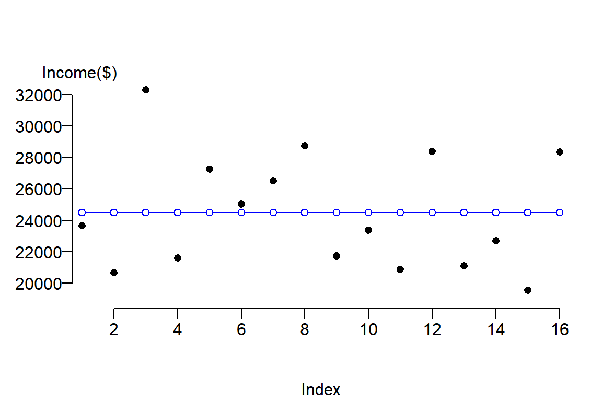
The function abline adds a blue horizontal line whose value is \(\bar Y\). Blue dots are added using the points() function to highlight the associated predicted values, \(\hat Y\), for each value \(Y\). The x-axis serves only to spread out the \(Y\) values across its range. The las = 1 option in the plot function sets all axes labels to display horizontally (a value of 0 would set the orientation of all labels parallel to the axis which is the default setting).
One way to measure the error between the predicted values \(\hat Y\) and \(Y\) is to compute the difference (error \(\varepsilon\)) between both values.
| \(Y\) | \(\hat Y\) | \(\varepsilon = Y - \hat Y\) |
|---|---|---|
| 23663 | 24481 | -818 |
| 20659 | 24481 | -3822 |
| 32277 | 24481 | 7796 |
| 21595 | 24481 | -2886 |
| 27227 | 24481 | 2746 |
| 25023 | 24481 | 542 |
| 26504 | 24481 | 2023 |
| 28741 | 24481 | 4260 |
| 21735 | 24481 | -2746 |
| 23366 | 24481 | -1115 |
| 20871 | 24481 | -3610 |
| 28370 | 24481 | 3889 |
| 21105 | 24481 | -3376 |
| 22706 | 24481 | -1775 |
| 19527 | 24481 | -4954 |
| 28321 | 24481 | 3840 |
The errors (or differences between \(Y\) and \(\hat Y\)) are displayed as red dashed lines in the following figure:
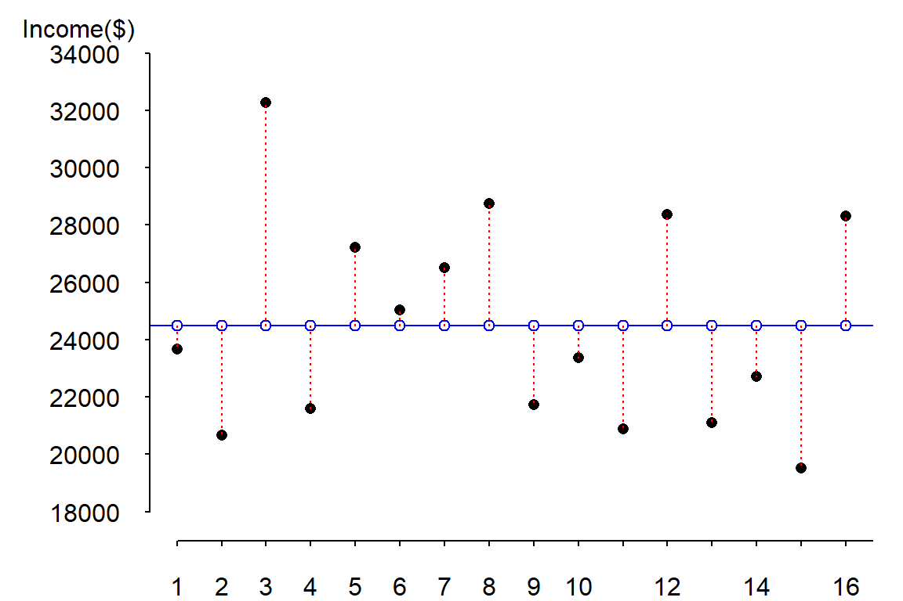
To get the magnitude of the total error, we could sum these errors, however, doing so would return a sum of errors of 0 (i.e. the positive errors and negative errors cancel each other out). One solution to circumvent this problem is to take the absolute values of the errors then sum these values (this is also known as the least absolute error, LAE):
\[ LAE = \sum \mid Y - \hat Y \mid \]
However, by convention, we quantify the difference between \(Y\) and \(\hat Y\) using the sum of the squared errors (SSE) instead, or
\[ SSE = \sum (Y - \hat Y)^2 \]
The following table shows the difference between LAE and SSE values
| \(Y\) | \(\hat Y\) | \(\mid Y - \hat Y \mid\) | \((Y - \hat Y)^2\) |
|---|---|---|---|
| 23663 | 24481 | 818 | 668511 |
| 20659 | 24481 | 3822 | 14604818 |
| 32277 | 24481 | 7796 | 60783463 |
| 21595 | 24481 | 2886 | 8326832 |
| 27227 | 24481 | 2746 | 7542576 |
| 25023 | 24481 | 542 | 294171 |
| 26504 | 24481 | 2023 | 4094046 |
| 28741 | 24481 | 4260 | 18150795 |
| 21735 | 24481 | 2746 | 7538457 |
| 23366 | 24481 | 1115 | 1242389 |
| 20871 | 24481 | 3610 | 13029393 |
| 28370 | 24481 | 3889 | 15127238 |
| 21105 | 24481 | 3376 | 11394844 |
| 22706 | 24481 | 1775 | 3149294 |
| 19527 | 24481 | 4954 | 24538401 |
| 28321 | 24481 | 3840 | 14748480 |
\(LAE_{mean}\) = 50197 and \(SSE_{mean}\) = 205233706.
Squaring the error has the effect of amplifying large errors in the dataset. The following figure highlights the difference by drawing the square of the differences as red shaded squares.
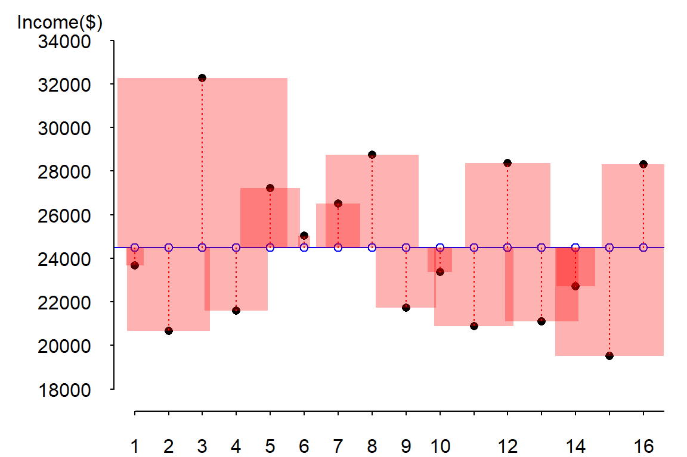
It is more natural to visualize a squared amount using a geometric primitive whose area changes proportionately to the squared error changes. Note how the larger error at index 3 has an error line length about 3 times that associated with index 5 (these correspond to the records number three and five in the above table). Yet, the area for index 3 appears almost 9 times bigger than that associated with index 5 (as it should since we are squaring the difference). Note too that the unit used to measure the area of each square (the squared error) is the one associated with the Y-axis (recall that the error is associated with the prediction of \(Y\) and not of \(X\)).
This simple model (i.e. one where we are using the mean value to predict \(Y\) for each county) obviously has its limits. A more common approach in predicting \(Y\) is to use a predictor variable (i.e. a covariate).
2 The bivariate regression model
The bivariate model augments the simple (mean) model by adding a variable, \(X\), that is believed to co-vary with \(Y\). In other words, we are using another variable (aka, an independent or predictor variable) to estimate \(Y\). This augmented model takes on the form:
\[ Y = \beta_0 + \beta_1X + \varepsilon \]
This is the equation of a slope where \(\beta_0\) tells us where on the y-axis the slope intersects the axis and \(\beta_1\) is the slope of the line (a positive \(\beta_1\) value indicates that the slope is upward, a negative \(\beta_1\) value indicates that the slope is downward).
Continuing with our example, we will look at the percentage of Mainers having attained a Bachelor’s degree or greater by county (the data are provided by the US Census ACS 2007 - 2011 dataset).
The following block of code defines the new variable \(X\) (i.e. fraction of Mainers having attained a bachelor’s degree or greater within each county) and visualizes the relationship between income and education attainment using a scatter plot. In the process, a dataframe called dat is created that stores both \(X\) and \(Y\).
# X represents the fraction of residents in each county having attained a
# bachelor's degree or better
x <- c(0.19, 0.16, 0.40, 0.24, 0.31, 0.24, 0.28,
0.31, 0.18, 0.23, 0.17, 0.31, 0.15, 0.25,
0.19, 0.28)
# Let's combine Income and Education into a single dataframe
dat <- data.frame(Income = y, Education = x)
# We will add county names to each row
row.names(dat) <- c("Androscoggin", "Aroostook", "Cumberland", "Franklin", "Hancock",
"Kennebec", "Knox", "Lincoln", "Oxford", "Penobscot", "Piscataquis",
"Sagadahoc", "Somerset", "Waldo", "Washington", "York")The following displays the contents of our new dataframe dat:
| Income | Education | |
|---|---|---|
| Androscoggin | 23663 | 0.19 |
| Aroostook | 20659 | 0.16 |
| Cumberland | 32277 | 0.40 |
| Franklin | 21595 | 0.24 |
| Hancock | 27227 | 0.31 |
| Kennebec | 25023 | 0.24 |
| Knox | 26504 | 0.28 |
| Lincoln | 28741 | 0.31 |
| Oxford | 21735 | 0.18 |
| Penobscot | 23366 | 0.23 |
| Piscataquis | 20871 | 0.17 |
| Sagadahoc | 28370 | 0.31 |
| Somerset | 21105 | 0.15 |
| Waldo | 22706 | 0.25 |
| Washington | 19527 | 0.19 |
| York | 28321 | 0.28 |
Now let’s plot the data
plot( Income ~ Education , dat, pch = 16, ylab=NA, mgp=c(4,1,.5) , las=1, bty="n", xaxs="i",
xpd = TRUE, xlab="Fraction having attained a Bachelor's degree")
mtext("Income($)", side=3, adj= -0.1)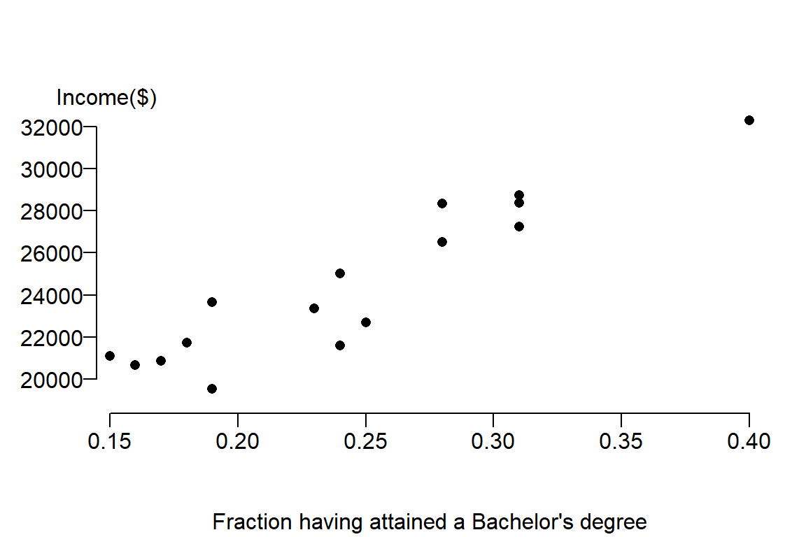
It’s clear from the figure that there appears to be a positive relationship between income and education attainment. The next step is to capture the nature of this relationship from the perspective of a linear equation. We seek to fit a slope that will minimize the overall distance between the line and the true value, hence we seek \(\beta_0\) and \(\beta_1\) that minimizes the error. The estimate for \(\beta_1\) is sometimes represented as the letter \(b_1\) or \(\hat \beta_1\). We’ll stick with the latter notation throughout this exercise. \(\hat \beta_1\) is estimated using the linear least squares technique:
\[ \hat \beta_1 = \frac{\sum (X_i - \bar X)(Y_i-\bar Y)}{\sum (X_i-\bar X)^2} \]
The breakdown of the terms in this equation are listed in the following table:
| \(X\) | \(Y\) | \((X - \bar X)(Y - \bar Y)\) | \((X - \bar X)^2\) |
|---|---|---|---|
| 0.19 | 23663 | 43.436 | 0.003 |
| 0.16 | 20659 | 317.673 | 0.007 |
| 0.40 | 32277 | 1223.056 | 0.025 |
| 0.24 | 21595 | 9.018 | 0.000 |
| 0.31 | 27227 | 183.664 | 0.004 |
| 0.24 | 25023 | -1.695 | 0.000 |
| 0.28 | 26504 | 74.612 | 0.001 |
| 0.31 | 28741 | 284.913 | 0.004 |
| 0.18 | 21735 | 173.318 | 0.004 |
| 0.23 | 23366 | 14.629 | 0.000 |
| 0.17 | 20871 | 263.954 | 0.005 |
| 0.31 | 28370 | 260.102 | 0.004 |
| 0.15 | 21105 | 314.355 | 0.009 |
| 0.25 | 22706 | -12.201 | 0.000 |
| 0.19 | 19527 | 263.161 | 0.003 |
| 0.28 | 28321 | 141.614 | 0.001 |
| NA | NA | 3553.609 | 0.072 |
The bottom of the last two columns show the sums of the numerator and denominator (3553.60875 and 0.0715438 respectively). \(\hat \beta_1\), the estimated slope, is therefore 3553.61/0.072 or 49670.
Knowing \(\hat \beta_1\) we can solve for the intercept \(b_0\):
\[ \hat \beta_0 = \hat Y - \hat \beta_1 X \]
It just so happens that the slope passes through \(\bar Y\) and \(\bar X\). So we can substitute \(X\) and \(\hat Y\) in the equation with their respective means: 0.24 and 24481. This gives us \(\hat \beta_0\) = 12405. Our final linear equation looks like this:
\(\hat Y\) = 12404.5 + 49670.4 \(X\) + \(\varepsilon\)
It’s no surprise that R has a built in function, lm(), that will estimate these regression coefficients for us. The function can be called as follows:
M <- lm( y ~ x, dat)The output of the linear model is saved to the variable M. The formula y ~ x tells the function to regress the variable y against the variable x. You must also supply the name of the table or dataframe that stores these variables (i.e. the dataframe dat).
The regression coefficients \(\hat \beta_0\) and \(\hat \beta_1\) computed by lm can be extracted from output M as follows:
M$coefficients(Intercept) x
12404.50 49670.43 The regression coefficients are identical to those computed manually from the table.
We can also use the model output to add the regression line to our data. The function abline() reads the contents of the model output M and is smart enough to extract the slope equation for plotting:
plot( y ~ x , dat, pch = 16, ylab=NA, mgp=c(4,1,.5) , las=1, bty="n", xaxs="i", xpd = TRUE,
xlab="Fraction having attained a Bachelor's degree")
mtext("Income($)", side=3, adj= -0.1)
abline(M, col="blue")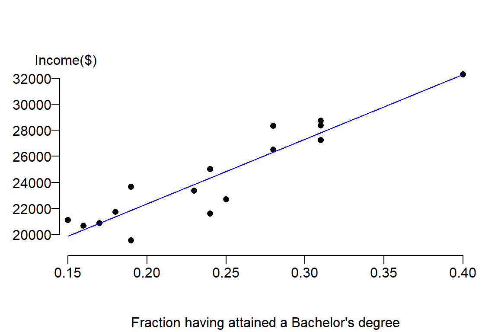
Next, we will look at the errors (or residuals) between the estimated values \(\hat Y\) from our model and the true values \(Y\) from our observations. We will represent these differences as squared errors:
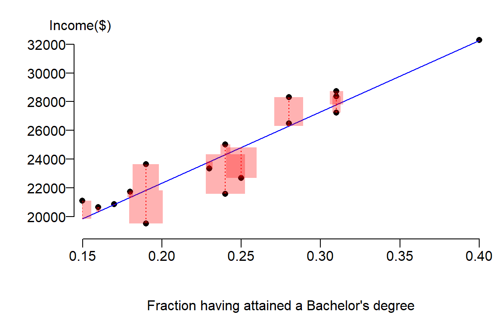
Notice how the sizes of the red boxes are smaller then the ones for the simple model (i.e the model defined by the mean \(\bar Y\)). In fact, we can sum these squared differences to get our new sum of squared error (SSE) as follows:
SSE <- sum( summary(M)$res^2 )This returns an \(SSE\) value of 28724435.
This is less than the sum of squared errors for the mean model \(\bar Y\), \(SSE_{mean}\), whose value was 205233705.75. \(SSE\) is sometimes referred to as the residual error. The difference between the residual error \(SSE\) and \(SSE_{mean}\) is the error explained by our new (bivariate) model or the sum of squares reduced, \(SSR\):
\[ SSR = SSE_{mean} - SSE \]
In R, this can easily be computed as follows:
SSR <- SSE.mean - SSEgiving us an \(SSR\) value of 176509271.
Graphically, the square root of each squared residual making up \(SSR\) represents the distance between the mean model (which is a horizontal line) and the bivariate model (which usually has a none zero slope) for every point. This is not the distance between a point and one of the lines.
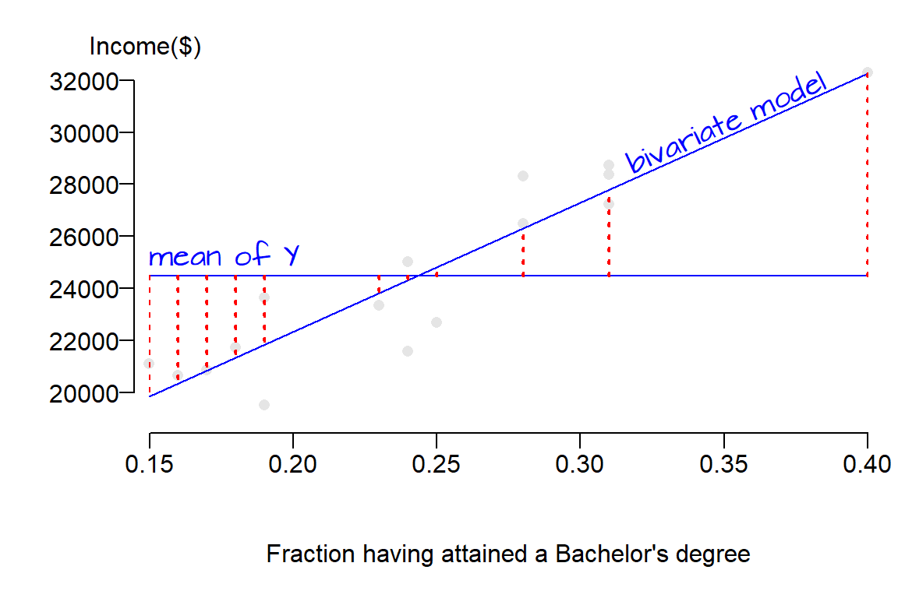
The linear models are shown in blue lines, the square root of each residual element making up \(SSR\) (the difference between the two models) is shown in dashed red lines. Had we shown each squared residual, red boxes would have been drawn as in earlier figures (the boxes were not drawn here to prevent clutter). The take away point here is that \(SSR\) is the error that is explained by the new bivariate model.
The following table summarizes some of these key error terms:
| Error | Notation | |
|---|---|---|
| Mean model | Total error | \(SSE_{mean}\) or \(SST\) |
| Bivariate model | Residual error | \(SSE\) |
| Bivariate - Mean | Explained error | \(SSR\) |
2.1 Testing if the bivariate model is an improvement over the mean model
2.1.1 The coefficient of determination, \(R^2\)
In this working example, the percent error explained by the bivariate model is,
\[ \frac{SSE_{mean} - SSE}{SSE_{mean}} \times 100 = \frac{SSR}{SSE_{mean}} \times 100 \]
or (205233706 - 28724435) / 205233706 * 100 = 86.0%. This is a substantial reduction in error.
The ratio between \(SSR\) and \(SSE_{mean}\) is also referred to as the proportional error reduction score (also referred to as the coefficient of determination), or \(R^2\), hence:
\[ R^2 = \frac{SSR}{SSE_{mean}} \]
\(R^2\) is another value computed by the linear model lm() that can be extracted from the output M as follows:
summary(M)$r.squared[1] 0.8600404The \(R^2\) value computed by \(M\) is the same as that computed manually using the ratio of errors (except that the latter was presented as a percentage and not as a fraction). Another way to describe \(R^2\) is to view its value as the fraction of the variance in \(Y\) explained by \(X\). A \(R^2\) value of \(0\) implies complete lack of fit of the model to the data whereas a value of \(1\) implies perfect fit. In our working example the \(R^2\) value of 0.86 implies that the model explains 86% of the variance in \(Y\).
R also outputs \(adjusted\; R^2\), a better measure of overall model fit. It ‘penalizes’ \(R^2\) for the number of predictors in the model vis-a-vis the number of observations. As the ratio of predictors to number of observation increases, \(R^2\) can be artificially inflated thus providing us with a false sense of model fit quality. If the number of predictors to number of observations ratio is small, \(adjusted\; R^2\) will be smaller than \(R^2\). \(adjusted\; R^2\) can be extracted from the model output as follows:
summary(M)$adj.r.squaredThe \(adjusted\; R^2\) of 0.85 is very close to our \(R^2\) value of 0.86. So our predictive power hasn’t changed given our sample size and one predictor variable.
2.1.2 The F-ratio test
\(R^2\) is one way to evaluate the strength of the linear model. Another is to determine if the reduction in error between the bivariate model and mean model is significant. We’ve already noted a decrease in overall residual errors when augmenting our mean model with a predictor variable \(X\) (i.e. the fraction of residents having attained at least a bachelor’s degree). Now we need to determine if this difference is significant.
It helps to conceptualize residual errors as spreads or variances. The following two plots show the errors explained by the model (left) and the errors not explained by the model for each of the 16 data points. Note that we can derive \(SSR\) and \(SSE\) from the left and right graphs respectively by squaring then summing the horizontal error bars.
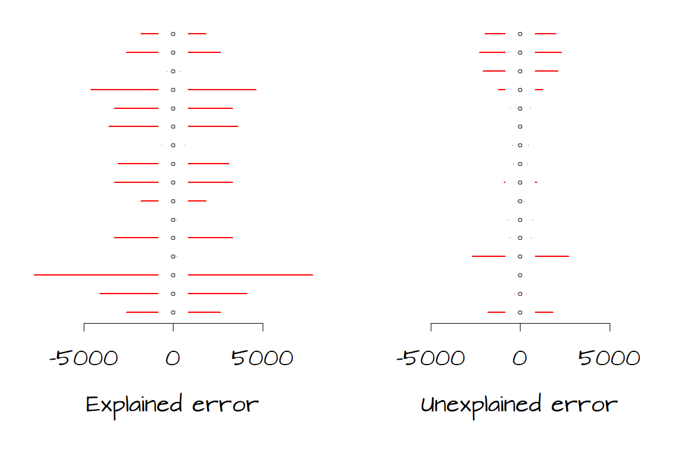
We want to assess whether the total amount of unexplained error (right) is significantly less than the total amount of explained error (left). We have 16 records (i.e. data for sixteen counties) therefore we have 16 measures of error. Since the model assumes that the errors are the same across the entire range of \(Y\) values, we will take the average of those errors; hence we take the average of \(SSR\) and the average of \(SSE\). However, because these data are from a subset of possible \(Y\) values and not all possible \(Y\) values we will need to divide \(SSR\) and \(SSE\) by their respective \(degress\; of\; freedom\) and not by the total number of records, \(n\). These “averages” are called mean squares (\(MS\)) and are computed as follows:
\[ MS_{model} = \frac{SSR}{df_{model}} = \frac{SSR}{parameters\; in\; the\; bivariate\; model - parameters\; in\; the\; mean\; model} \]
\[ MS_{residual} = \frac{SSE}{df_{residual}} = \frac{SSE}{n - number\; of\; parameters} \]
where the \(parameters\) are the number of coefficients in the mean model (where there is just one parameter: \(\beta_0 = \hat Y\)) and the number of coefficient in the bivariate model (where there are two parameters: \(\beta_0\) and \(\beta_1\)). In our working example, \(df_{model}\) = 1 and \(df_{residual}\) = 14.
It’s important to remember that these measures of error are measures of spread and not of a central value. Since these are measures of spread we use the \(F\)-test (and not the \(t\)-test) to determine if the difference between \(MS_{model}\) and \(MS_{residual}\) is significant (recall that the \(F\) test is used to determine if two measures of spread between samples are significantly different). The \(F\) ratio is computed as follows:
\[ F = \frac{MS_{model}}{MS_{residual}} \]
A simple way to implement an \(F\) test with on our bivariate regression model is to call the anova() function as follows:
anova(M)where the variable M is the output from our regression model created earlier. The output of anova() is summarized in the following table:
| Df | Sum Sq | Mean Sq | F value | Pr(>F) | |
|---|---|---|---|---|---|
| x | 1 | 176509271 | 176509271 | 86.02884 | 0.0000002 |
| Residuals | 14 | 28724435 | 2051745 | NA | NA |
The first row in the table (labeled as x) represents the error terms \(SSR\) and \(MS_{model}\) for the basic model (the mean model in our case) while the second row labeled Residuals represents error terms \(SSE\) and \(MS_{residual}\) for the current model. The column labeled Df displays the degrees of freedom, the column labeled Sum Sq displays the sum of squares \(SSR\) and \(SSE\), the column labeled Mean Sq displays the mean squares \(MS\) and the column labeled F value displays the \(F\) ratio \(MS_{model}/MS_{residual}\).
The larger the \(F\) ratio, the greater the difference between the bivariate model and mean model. The question then becomes ‘how significant is the observed ratio?’. To answer this question, we must setup a hypothesis test. We setup the test as follows:
\(H_o\): The addition of the term \(\beta_1\) (and hence the predictor \(X\)) does not improve the prediction of \(Y\) over the simple mean model.
\(H_a\): The addition of the term \(\beta_1\) (and hence the predictor \(X\)) helps improve the prediction of \(Y\) over the simple mean model.
The next step is to determine how likely we are (as a measure of probability) to have a \(F\) ratio as large as the one observed under the assumption \(H_o\) that the bivariate model does not improve on our prediction of \(Y\). The last column in the anova output gives us this probability (as a fraction): \(P\) = 0. In other words, there is a 0% chance that we could have computed an \(F\) ratio as extreme as ours had the bivariate model not improved over the mean model.
The following graph shows the frequency distribution of \(F\) values we would expect if indeed \(H_o\) was true. Most of the values under \(H_o\) fall between 0 and 5. The red line to the far right of the curve is where our observed \(F\) value lies along this continuum–this is not a value one would expect to get if \(H_o\) were true. It’s clear from this output that our bivariate model is a significant improvement over our mean model.
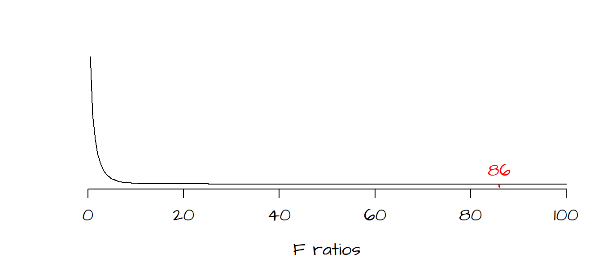
The F-ratio is not only used to compare the bivariate model to the mean, in fact, it’s more commonly used to compare a two-predictor variable model with a one-predictor variable model or a three-predictor model with a two-predictor model and so on. In each case, one model is compared with a similar model minus one predictor variable.
When two different models are compared, the function anova() requires two parameters: the two regression model outputs (we’ll call M1 and M2).
anova(M1, M2)An example will be provided in a later section when we tackle multivariate regression.
2.2 Testing if the estimated slope is significantly different from 0
We’ve just assessed that our bivariate model is a significant improvement over the much simpler mean model. We can also test if each regression coefficient \(\beta\) is significantly different from 0. If we are dealing with a model that has just one predictor \(X\), then the \(F\) test just described will also tell us if the regression coefficient \(\beta_1\) is significant. However, if more than one predictor variable is present in the regression model, then you should perform an \(F\)-test to test overall model improvement, then test each regression term independently for significance.
When assessing if a regression coefficient is significantly different from zero, we are setting up yet another hypothesis test where:
\(H_o\): \(\beta_1\) = 0 (i.e. the predictor variable does not contribute significantly to the overall improvement of the predictive ability of the model).
\(H_a\): \(\beta_1\) < 0 or \(\beta_1\) > 0 for one-tailed test, or \(\beta_1 \neq\) 0 for a two-tailed test (i.e. the predictor variable does contribute significantly to the overall improvement of the predictive ability of the model).
Our hypothesis in this working example is that the level of education attainment (\(X\)) can predict per-capita income (\(Y\)), at least at the county level (which is the level at which our data is aggregated). So what we set out to test is the null hypothesis, \(H_o\), that \(X\) and \(Y\) are not linearly related. If \(H_o\) is true, then we would expect the regression coefficient \(\beta_1\) to be very close to zero. So this begs the question ‘how close should \(\beta_1\) be to 0 for us not to reject \(H_o\)?’
To answer this question, we need to perform a \(t\)-test where we compare our calculated regression coefficient \(\hat \beta_1\) to what we would expect to get if \(X\) did not contribute significantly to the model’s predictive capabilities. So the statistic \(t\) is computed as follows:
\[ t = \frac{\hat \beta_1 - \beta_{1_o}}{s_{\hat \beta_1}} \]
Since \(\beta_1\) is zero under \(H_o\) , we can rewrite the above equation as follows:
\[ t = \frac{\hat \beta_1 - 0}{s_{\hat \beta_1}} = \frac{\hat \beta_1 }{s_{\hat \beta_1}} \]
where the estimate \(s_{\hat \beta_1}\) is the standard error of \(\beta\) which can be computed from:
\[ s_{\hat \beta_1} = \frac{\sqrt{MS_{residual}}}{\sqrt{SSX}} \]
where \(SSX\) is the sum of squares of the variable \(X\) (i.e. \(\sum (X - \bar X)^2\)) which was computed in an earlier table.
In our working example, \(s_{\hat \beta_1}\) is 1432.3914787 / 0.2674766 or \(s_{\hat \beta_1}\) = 5355.2. The test statistic \(t\) is therefore 49670.43 / 5355.2 or \(t\) = 9.28.
Next we need to determine if the computed value of \(t\) is significantly different from the values of \(t\) expected under \(H_o\). The following figure plots the frequency distribution of \(\beta_{1_o}\) (i.e. the kind of \(\beta_1\) values we could expect to get under the assumption that the predictor \(X\) does not contribute to the model) along with the red regions showing where our observed \(\hat \beta_1\) must lie for us to safely reject \(H_o\) at the 5% confidence level (note that because we are performing a two-sided test, i.e. that \(\hat \beta_1\) is different from 0, the red regions each represent 2.5%; when combined both tails give us a 5% rejection region).
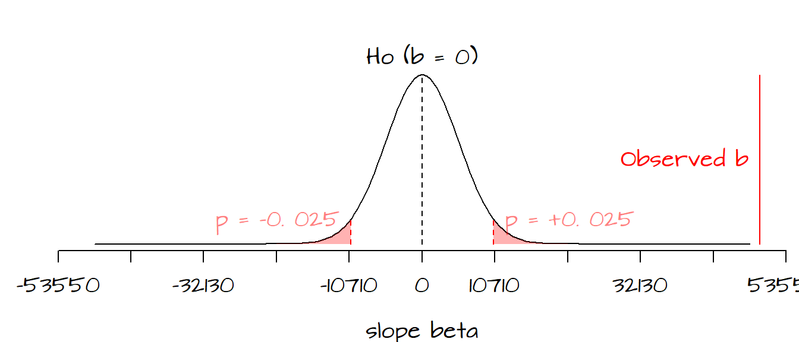
It’s clear that seeing where our observed \(\hat \beta_1\) lies along the distribution allows us to be fairly confident that our \(\hat \beta_1\) is far from being a typical value under \(H_o\), in fact we can be quite confident in rejecting the null hypothesis, \(H_o\). This implies that \(X\) (education attainment) does contribute information towards the prediction of \(Y\) (per-capita income) when modeled as a linear relationship.
Fortunately, we do not need to burden ourselves with all these calculations. The aforementioned standard error, \(t\) value and \(P\) value are computed as part of the lm analysis. You can list these and many other output parameters using the summary() function as follows:
summary(M)[[4]]The [[4]] option displays the pertinent subset of the summary output that we want. The content of this output is displayed in the following table:
| Estimate | Std. Error | t value | Pr(>|t|) | |
|---|---|---|---|---|
| (Intercept) | 12404.50 | 1350.332 | 9.186264 | 0.0000003 |
| x | 49670.43 | 5355.202 | 9.275173 | 0.0000002 |
The second line of the output displays the value of \(\hat \beta_1\), its standard error, its \(t\)-value and the probability of observing a \(\beta_1\) value as extreme as ours under \(H_o\).
2.2.1 Extracting \(\hat \beta_1\) confidence interval
\(\hat \beta_1\)’s standard error \(s_{\hat \beta_1}\) can also be used to derive a confidence interval for our estimate. The standard error of 5355 tells us that we can be ~68% confident that our true \(\beta_1\) value lies between \(\hat \beta_1\) - 5355 and \(\hat \beta_1\) + 5355. We can use the standard error to construct different confidence intervals depending on our desired \(\alpha\) level. The following table shows upper and lower limits for a few common alpha levels:
| Confidence level \(\alpha\) | Lower limit | Upper limit |
|---|---|---|
| 68% | 44149 | 55192 |
| 95% | 38185 | 61156 |
| 99% | 33729 | 65612 |
The following figure shows the range of the distribution curve covered by the 68% and 95% confidence intervals for our working example.
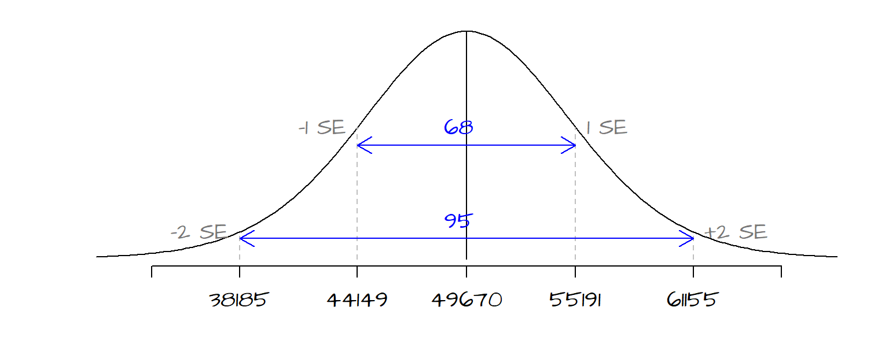
The confidence intervals for \(\hat \beta_1\) can easily be extracted in R using the confint() function. for example, to get the confidence interval for an \(\alpha\) of 95%, call the following function:
confint(M, parm = 2, level = 0.95) 2.5 % 97.5 %
x 38184.66 61156.2The first parameter, M, is the linear regression model output computed earlier. The second parameter parm = 2 tells R which parameter to compute the confidence interval for (a value of 1 means that the confidence interval for the intercept is desired), and the third parameter in the function, level = 0.95 tells R which \(\alpha\) value you wish to compute a confidence interval for.
2.3 Checking the residuals
We have already used the residuals \(\varepsilon\) to give us and assessment of model fit and the contribution of \(X\) to the prediction of \(Y\). But the distribution of the residuals can also offer us insight into whether or not all of the following key assumptions are met:
- The mean of the residuals, \(\bar \varepsilon = 0\), is close to 0.
- The spread of the residuals is the same for all values of \(X\)–i.e. they should be homoscedastic.
- The probability distribution of the errors follows a normal (Gaussian) distribution.
- The residuals are independent of one another–i.e. they are not autocorrelated.
We will explore each assumption in the following sections.
2.3.1 Assumption 1: \(\bar \varepsilon = 0\)
The lm regression model outputs not only parameters as seen in earlier sections, but residuals as well. For each \(Y\) value, a residual (or error) accounting for the difference between the model \(\hat Y\) and actual \(Y\) value is computed. We can plot the residuals as a function of the predictor variable \(X\). We will also draw the line at \(\varepsilon\) = 0 to see how \(\varepsilon\) fluctuates around 0.
plot(M$residuals ~ x, pch = 16, ylab= "Residuals")
abline(h = 0, lty = 3)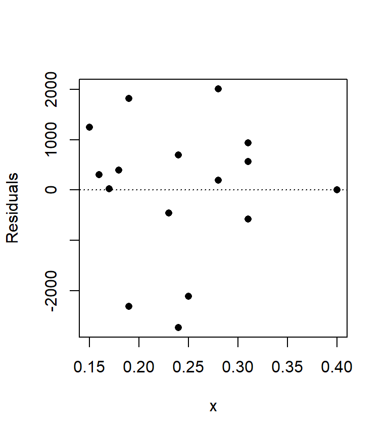
We can compute the mean of the residuals, \(\bar \varepsilon\), as follows:
mean(M$residuals)[1] -0.00000000000002131628which gives us a value very close to zero as expected.
2.3.2 Assumption 2: homoscedasticity
It helps to demonstrate via figures what does and does not constitute a homoscedastic residual:
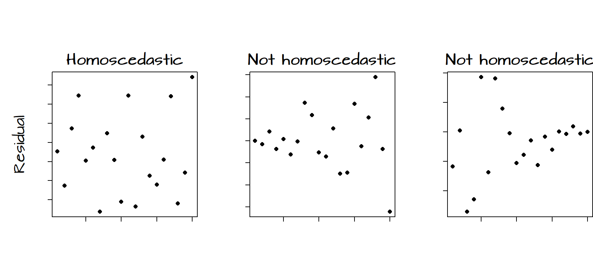
The figure on the left shows no obvious trend in the variability of the residuals as a function of \(X\). The middle figure shows an increase in variability of the residuals with increasing \(X\). The figure on the right shows a decrease in variability in the residuals with increasing \(X\). When the variances of \(\varepsilon\) are not uniform across all ranges of \(X\), the residuals are said to be heteroscedastic.
Our plot of the residuals from the bivariate model may show some signs of heteroscedasticity, particularly on the right hand side of the graph. When dealing with relatively small samples, a visual assessment of the distribution of the residuals may not be enough to assess whether or not the assumption of homoscedasticity is met. We therefore turn to the Breusch-Pagan test. A Breusch-Pagan function, ncvTest(), is available in the library car which will need to be loaded into our R session before performing the test. The package car is usually installed as part of the normal R installation.
library(car)
ncvTest(M)Non-constant Variance Score Test
Variance formula: ~ fitted.values
Chisquare = 0.2935096, Df = 1, p = 0.58798The Breusch-Pagan tests the (null) hypothesis that the variances are constant across the full range of \(X\). The \(P\) value tells the likelihood that our distribution of residual variances are consistent with homoscedasticity. A non-significant \(P\) value (one usually greater than 0.05) should indicate that our residuals are homoscedastic. Given our high \(P\) value of 0.59, we can be fairly confident that we have satisfied our second assumption.
2.3.3 Assumption 3: Normal (Gaussian) distribution of residuals
An important assumption is that the distribution of the residual values follow a normal (Gaussian) distribution. Note that this assumption is only needed when computing confidence intervals or regression coefficient \(P\)-values. If your interest is solely in finding the best linear unbiased estimator (BLUE), then only the three other assumptions need to be met.
The assumption of normality of residuals is often confused with the belief that \(X\) (the predictor variables) must follow a normal distribution. This is incorrect! The least-squares regression model makes no assumptions about the distribution of \(X\). However, if the residuals do not follow a normal distribution, then one method of resolving this problem is to transform the values of \(X\) (which may be the source of confusion).
It helps to first plot the histogram of our residuals then to fit a kernel density function to help see the overall trend in distribution.
hist(M$residuals, col="bisque", freq=FALSE, main=NA)
lines(density(M$residuals), col="red")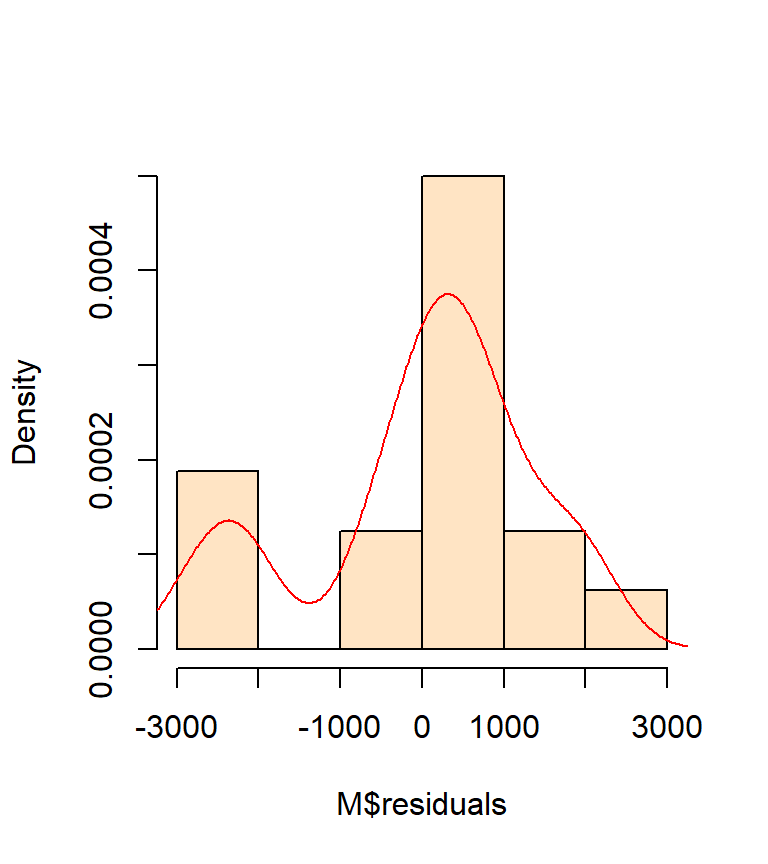
A good visual test of normality is the use of a Q-Q plot.
plot(M, which = 2)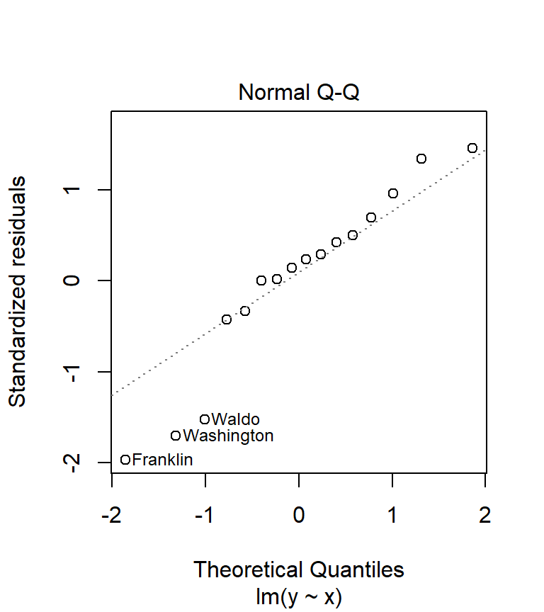
What we are hoping to see is an alignment of the residual values (hollow points on the plot) along the sloped dashed line. Any deviation from the sloped line may indicate lack of normality in our residuals. You will seldom encounter residuals that fit the line exactly. What you are assessing is whether or not the difference is significant. In our working example, there seems to be disagreement between the distribution of our residuals and the normal line on the plot.
A visual assessment of normality using the Q-Q plot is usually the preferred approach, but you can also use the Shapiro-Wilk test to assess the significance of deviation from normality. But use this test with caution, large sample sizes tend to always indicate deviation from normality, regardless how close they follow the Gaussian curve. R has a function called shapiro.test() which we can call as follows:
shapiro.test(M$residuals)
Shapiro-Wilk normality test
data: M$residuals
W = 0.92243, p-value = 0.1846The output we are interested in is the \(P\)-value. The Shapiro-Wilk Test tests the null hypothesis that the residuals come from a normally distributed population. A large \(P\)-value indicates that there is a good chance that the null is true (i.e. that the residuals are close to being normally distributed). If the \(P\) value is small, then there is a good chance that the null is false. Our \(P\) value is 0.18 which would indicate that we cannot reject the null. Despite the Shapiro-Welk test telling us that there is a good chance that our \(\varepsilon\) values come from a normally distributed population, our visual assessment of the Q-Q plot leads us to question this assessment.
Again, remember that the assumption of normality of residuals really only matters when you are seeking a confidence interval for \(\hat \beta_1\) or \(P\)-values.
2.3.4 Assumption 4: Independence of residuals
Our final assumption pertains to the independence of the residuals. In other words, we want to make sure that a residual value is not auto-correlated with a neighboring residual value. The word neighbor can mean different things. It may refer to the order of the residuals in which case we are concerned with residuals being more similar within a narrow range of \(X\), or it may refer to a spatial neighborhood in which case we are concerned with residuals of similar values being spatially clustered. To deal with the former, we can use the Durbin-Watson test available in the R package car.
library(car) # Load this package if not already loaded
durbinWatsonTest(M) lag Autocorrelation D-W Statistic p-value
1 0.01856517 1.706932 0.588
Alternative hypothesis: rho != 0Ideally, the D-W statistic returned by the test should fall within the range of 1 to 3. The \(P\)-value is the probability that our residual distribution is consistent with what we would expect if there was no auto-correlation. Our test statistic of 1.71 and \(P\) value of 0.62 suggests that the assumption of independence is met with our model. You might note that the \(P\)-value changes every time the tests is re-run. This is because the Durbin Watson test, as implemented in R, uses a Monte-Carlo approach to compute \(P\). If you want to nail \(P\) down to a greater precision, you can add the reps = parameter to the function (by default, the test runs 1000 bootstrap replications). For example, you could rerun the test using 10,000 bootstrap replications (durbinWatsonTest(M, reps = 10000)).
2.4 Influential Observations
We want to avoid a situation where a single, or very small subset of points, have a disproportionately large influence on the model results. It is usually best to remove such influential points from the regression analysis. This is not to say that the influential points should be ignored from the overall analysis, but it may suggest that such points may behave differently then the bulk of the data and therefore may require a different model.
Several tests are available to determine if one or several points are influential. Two of which are covered here: Cook’s distance and hat values.
Cook’s distance can be computed from the model using the cooks.distance() function. But it’s also available as one of plot.lm’s diagnostic outputs.
plot( M, which = 4)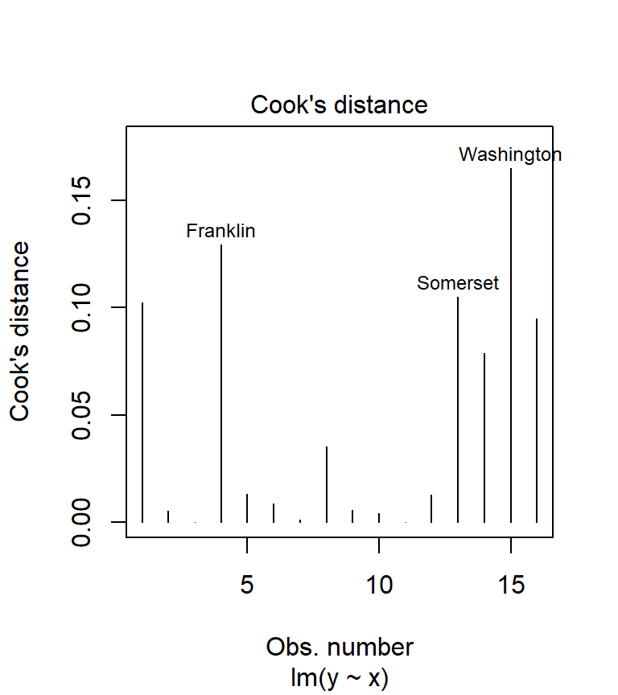
We could have called the plot.lm function, but because R recognizes that the object M is the output of an lm regression, it automatically passes the call to plot.lm. The option which = 4 tells R which of the 6 diagnostic plots to display (to see a list of all diagnostic plots offered, type ?plot.lm). Usually, any point with a Cook’s distance value greater than 1 is considered overly influential. In our working example, none of the points are even close to 1 implying that none of our observations wield undue influence.
The other test that can be used to assess if a point has strong leverage is the hat values test. The technique involves calculating an average leverage value for all data points; this is simply the ratio between the number of regression coefficients in our model (this includes the intercept) and the number of observations. Once the average leverage is computed, we use a cutoff of either twice this average or three times this average (these are two popular cutoff values). We then look for hat values greater then these cutoffs. In the following chunk of code, we first compute the mean leverage values (whose value is assigned to the cut object), we then compute the leverage values for each point using the hatvalues() function and plot the resulting leverage values along with the two cutoff values (in dashed red lines).
cut <- c(2, 3) * length(coefficients(M)) / length(resid(M))
M.hat <- hatvalues(M)
plot(M.hat)
abline(h = cut, col = "red", lty = 2)
text( which(M.hat > min(cut) ) , M.hat[M.hat > min(cut)] ,
row.names(dat)[M.hat > min(cut)], pos=4, col="red")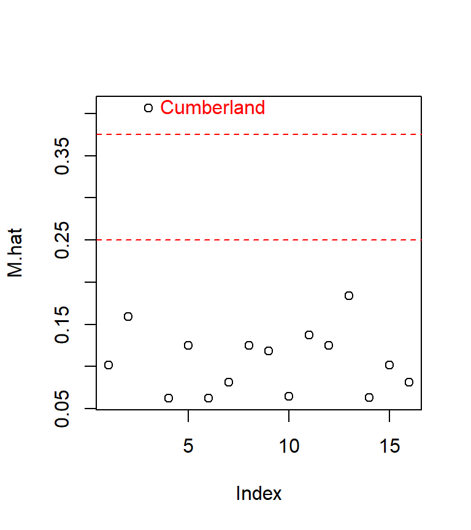
The last line of code (the one featuring the text function) labels only the points having a value greater than the smaller of the two cutoff values.
The influential point of interest is associated with the third record in our dat dataset, Cumberland county. Let’s see where the point lies relative to the regression slope
plot(Income ~ Education, dat)
abline(M, col="blue")
points(dat[M.hat > min(cut),]$Education,
dat[M.hat > min(cut),]$Income, col="red", pch=16)
text( dat[M.hat > min(cut),]$Education,
dat[M.hat > min(cut),]$Income ,
labels = row.names(dat)[M.hat > min(cut)],
col="red", pos=2) # Add label to the left of point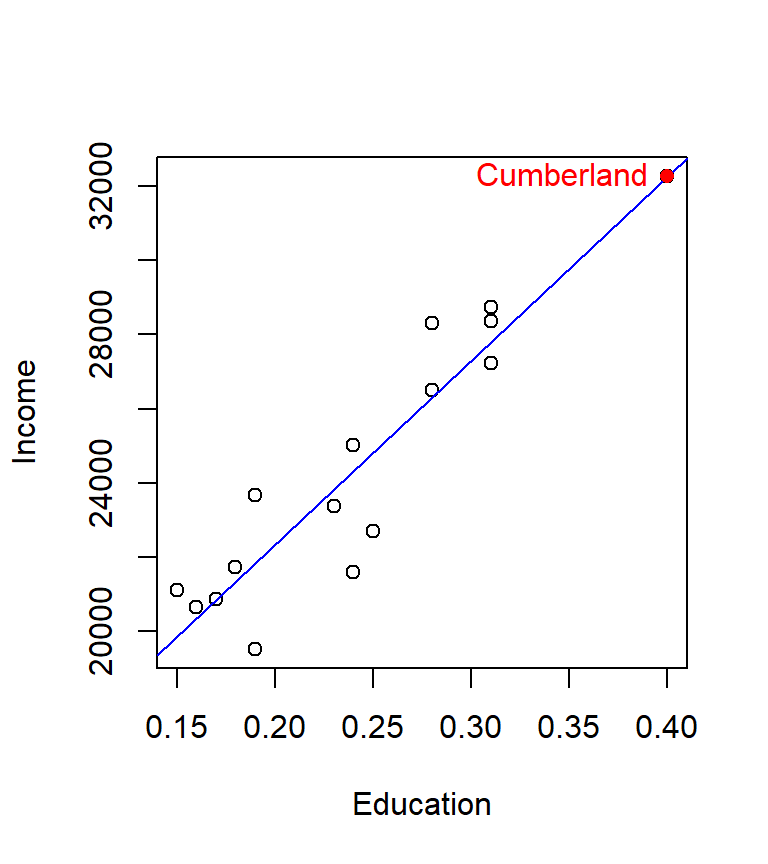
The point lies right on the line and happens to be at the far end of the distribution. The concern is that this point might have undue leverage potential. It helps to think of the regression line as a long straight bar hinged somewhere near the center. It requires less force to move the bar about the imaginary hinge point when applied to the ends of the bar then near the center of the bar. The hat values test is suggesting that observation number 3 may have unusual leverage potential. We can assess observation number 3’s influence by running a new regression analysis without observation number 3.
# Create a new dataframe that omits observation number 3
dat.nolev <- dat[ - which(M.hat > min(cut)),]
# Run a new regression analysis
M.nolev <- lm( Income ~ Education, dat.nolev)We can view a full summary of this analysis using the summary() function.
summary(M.nolev)
Call:
lm(formula = Income ~ Education, data = dat.nolev)
Residuals:
Min 1Q Median 3Q Max
-2730.0 -518.1 306.4 819.1 2009.8
Coefficients:
Estimate Std. Error t value Pr(>|t|)
(Intercept) 12408 1670 7.431 0.00000497 ***
Education 49654 6984 7.109 0.00000794 ***
---
Signif. codes: 0 '***' 0.001 '**' 0.01 '*' 0.05 '.' 0.1 ' ' 1
Residual standard error: 1486 on 13 degrees of freedom
Multiple R-squared: 0.7954, Adjusted R-squared: 0.7797
F-statistic: 50.54 on 1 and 13 DF, p-value: 0.000007942You’ll note that the \(adjusted\; R^2\) value drops from 0.85 to 0.78.
If we compare the estimates (and their standard errors) between both model (see the summary tables below), we’ll note that the estimates are nearly identical, however, the standard errors for \(\hat \beta_1\) increase by almost 30%.
The original model M:
| Estimate | Std. Error | t value | Pr(>|t|) | |
|---|---|---|---|---|
| (Intercept) | 12404.50 | 1350.33 | 9.19 | 0 |
| x | 49670.43 | 5355.20 | 9.28 | 0 |
The new model M.nolev:
| Estimate | Std. Error | t value | Pr(>|t|) | |
|---|---|---|---|---|
| (Intercept) | 12407.93 | 1669.77 | 7.43 | 0 |
| Education | 49654.45 | 6984.52 | 7.11 | 0 |
Given that our estimates are nearly identical, but that the overall confidence in the model decreases with the new model, there seems to be no reason why we would omit the 3rd observation based on this analysis.
This little exercise demonstrates the need to use as many different tools as possible to evaluate whether an assumption is satisfied or not.
2.5 What to do if some of the assumptions are not met
2.5.1 Data transformation
Data transformation (usually via some non-linear re-expression) may be required when one or more of the following apply: * The residuals are skewed or are heteroscedastic. * When theory suggests. * To force a linear relationship between variables
Do not transform your data if the sole purpose is to “correct” for outliers.
We observed that our residuals did not follow a normal (Gaussian) distribution. Satisfying this assumption is important if we are to use this model to derive confidence intervals around our \(\beta\) estimates or if we are to use this model to compute \(P\) values. We can see if transforming our data will help. This means re-expressing the \(X\) and/or the \(Y\) values (i.e. converting each value in \(X\) and/or \(Y\) by some expression such as log(x) or log(y))
It helps to look at the distribution of the variables (this is something that should normally be done prior to performing a regression analysis). We’ll use the hist() plotting function.
hist(dat$Income, breaks = with(dat, seq(min(Income), max(Income), length.out=5)) )
hist(dat$Education, breaks = with(dat, seq(min(Education), max(Education), length.out=5)) )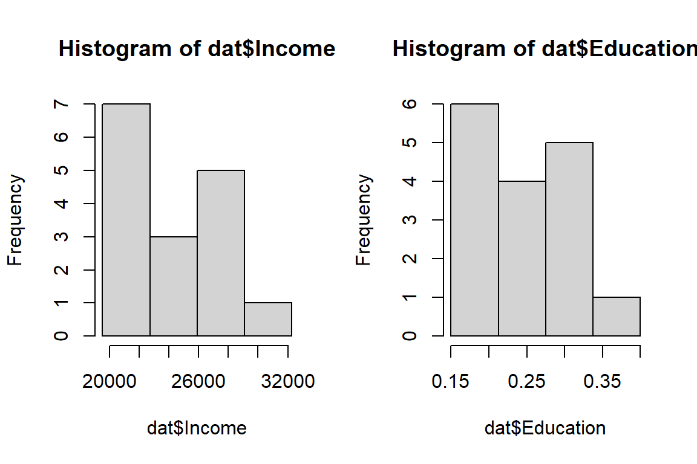
Two common transformations are the natural log (implemented as log in R) and the square. These are special cases of what is called a Box-Cox family of transformations.
Data transformation is an iterative process which relies heavily on Exploratory Data Analysis (EDA) skills. It’s important to keep in mind the goal of the transformation. In our example, its purpose is to help improve the symmetry of the residuals. The following figures show different Q-Q plots of the regression residuals for different transformations of \(X\) and \(Y\).
Several data transformation scenarios were explored using square root and logarithmic transformation of the \(X\)’s and/or \(Y\)’s. Of course, a thorough analysis would consist of a wide range of Box-Cox transformations. The scatter plots (along with the regression lines) are displayed on the left hand side for different transformations (the axes labels indicate which, if any, transformation was applied). The accompanying Q-Q plots are displayed to the right of the scatter plots.
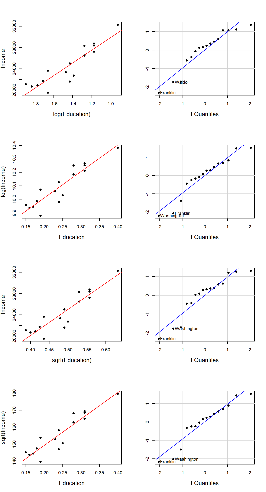
A visual assessment of the Q-Q plots indicates some mild improvements near the middle of the residual distribution (note how the mid-points line up nicely with the dashed line), particularly in the second and fourth transformation (i.e. for log(Income) ~ Education and sqrt(Income) ~ Education).
Note that transforming the data can come at a cost, particularly when interpretation of the results is required. For example, what does a log transformation of Income imply? When dealing with concentrations, it can make theoretical sense to take the log of a value–a good example being the concentration of hydrogen ions in a solution which is usually expressed as a log (pH). It’s always good practice to take a step back from the data transformation workflow and assess where your regression analysis is heading.
2.5.2 Bootstrapping
If the assumption of normality of residual is not met, one can overcome this problem by using bootstrapping techniques to come up with regression parameters confidence intervals and \(P\)-values. The bootstrap technique involves rerunning an analysis, such as the regression analysis in our case, many times, while randomly resampling from our data each time. In concept, we are acting as though our original sample is the actual population and we are sampling, at random (with replacement), from this pseudo population.
One way to implement a bootstrap is to use the boot package’s function boot(). But before we do, we will need to create our own regression function that will be passed to boot(). This custom function will not only compute a regression model, but it will also return the regression coefficients for each simulation. The following block of code defines our new custom function lm.sim:
lm.sim <- function(formula, data, i)
{
d.sim <- data [i,]
M.sim <- lm(formula, data=d.sim)
return(M.sim$coef)
}We can now use the boot() function to run the simulation. Note the call to our custom function lm.sim and the number of bootstrap replicates (i.e. R = 999). Also, don’t forget to load the boot library into the current R session (if not already loaded).
library(boot)
M.boot <- boot(statistic = lm.sim, formula = Income ~ Education, data=dat, R = 999)The results of our bootstrap simulation are now stored in the object M.boot. In essence, a new regression line is created for each simulation. In our working example, we created 999 different regression lines. The following plot shows the first 100 regression lines in light grey. Note how they fluctuate about the original regression line (shown in red). The distribution of these slopes is what is used to compute the confidence interval.
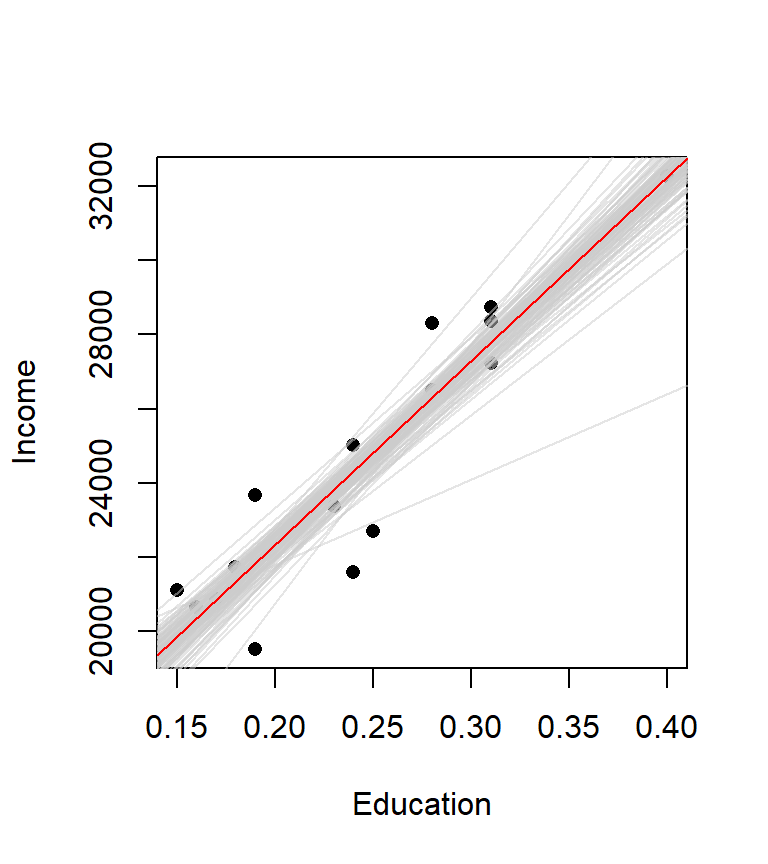
We can now use the function boot.ci (also in the boot package) to extract confidence intervals for our \(\beta\) parameters for a given \(\alpha\) confidence value. For example, to get the confidence intervals for the parameters \(\hat \beta_0\) at a 95% confidence interval, you can type the following command:
boot.ci(M.boot, conf = 0.95, type = "bca", index=1)BOOTSTRAP CONFIDENCE INTERVAL CALCULATIONS
Based on 999 bootstrap replicates
CALL :
boot.ci(boot.out = M.boot, conf = 0.95, type = "bca", index = 1)
Intervals :
Level BCa
95% ( 9933, 14027 )
Calculations and Intervals on Original ScaleNote that your values may differ since the results stem from Monte Carlo simulation. Index 1, the first parameter in our lm.sim output, is the coefficient for \(\hat \beta_0\). boot.ci will generate many difference confidence intervals. In this example, we are choosing bca (adjusted bootstrap percentile).
To get the confidence interval for \(\hat \beta_1\) at the 95% \(\alpha\) level just have the function point to index 2:
boot.ci(M.boot, conf = 0.95, type="bca", index=2)BOOTSTRAP CONFIDENCE INTERVAL CALCULATIONS
Based on 999 bootstrap replicates
CALL :
boot.ci(boot.out = M.boot, conf = 0.95, type = "bca", index = 2)
Intervals :
Level BCa
95% (43317, 58859 )
Calculations and Intervals on Original ScaleThe following table summarizes the 95% confidence interval for \(\hat \beta_1\) from our simulation. The original confidence interval is displayed for comparison.
| Model | \(\hat \beta_1\) interval |
|---|---|
| Original | [44149, 55192] |
| Bootstrap | [43317, 58859] |
3 Multivariate regression model
We do not need to restrict ourselves to one predictor variable, we can add as many predictor variables to the model as needed (if suggested by theory). But we only do so in the hopes that the extra predictors help account for the unexplained variances in \(Y\).
Continuing with our working example, we will add a second predictor variable, x2. This variable represents the fraction of the employed civilian workforce employed in a professional field (e.g. scientific, management and administrative industries)
x2 <- c(0.079, 0.062, 0.116, 0.055, 0.103, 0.078,
0.089, 0.079, 0.067, 0.073, 0.054, 0.094,
0.061, 0.072, 0.038, 0.084)We will add this new variable to our dat dataframe and name the variable Professional.
dat$Professional <- x2We now have an updated dataframe, dat, with a third column.
| Income | Education | Professional | |
|---|---|---|---|
| Androscoggin | 23663 | 0.19 | 0.079 |
| Aroostook | 20659 | 0.16 | 0.062 |
| Cumberland | 32277 | 0.40 | 0.116 |
| Franklin | 21595 | 0.24 | 0.055 |
| Hancock | 27227 | 0.31 | 0.103 |
| Kennebec | 25023 | 0.24 | 0.078 |
| Knox | 26504 | 0.28 | 0.089 |
| Lincoln | 28741 | 0.31 | 0.079 |
| Oxford | 21735 | 0.18 | 0.067 |
| Penobscot | 23366 | 0.23 | 0.073 |
| Piscataquis | 20871 | 0.17 | 0.054 |
| Sagadahoc | 28370 | 0.31 | 0.094 |
| Somerset | 21105 | 0.15 | 0.061 |
| Waldo | 22706 | 0.25 | 0.072 |
| Washington | 19527 | 0.19 | 0.038 |
| York | 28321 | 0.28 | 0.084 |
Let’s rerun our original model, but this time we will call the output of the one predictor model M1 (this naming convention will help when comparing models).
M1 <- lm(Income ~ Education, dat)Let’s review the summary. This time we’ll have R display the parameters and the statistics in a single output:
summary(M1)
Call:
lm(formula = Income ~ Education, data = dat)
Residuals:
Min 1Q Median 3Q Max
-2730.4 -490.9 249.5 757.9 2008.8
Coefficients:
Estimate Std. Error t value Pr(>|t|)
(Intercept) 12404 1350 9.186 0.000000264 ***
Education 49670 5355 9.275 0.000000235 ***
---
Signif. codes: 0 '***' 0.001 '**' 0.01 '*' 0.05 '.' 0.1 ' ' 1
Residual standard error: 1432 on 14 degrees of freedom
Multiple R-squared: 0.86, Adjusted R-squared: 0.85
F-statistic: 86.03 on 1 and 14 DF, p-value: 0.0000002353The output should be the same as before.
We now generate an augmented (i.e. adding a second predictor) regression model, M2, as follows:
M2 <- lm( Income ~ Education + Professional, dat)At this point, it’s helpful to visualize what a two-variable model represents. A two-variable model defines the equation of a plane that best fits a 3-D set of points. The regression plane is to a two-variable model what a regression line is to a one-variable model. We can plot the 3-D scatter plot where x-axis = fraction with bachelor’s, y-axis = fraction with a professional job and z-axis = income. We draw the 3-D scatter plot using the function scatterplot3d() from the scatterplot3d() package. We also add the regression plane to the plot.
library(scatterplot3d)
s3d <- scatterplot3d(dat$Education, dat$Professional , dat$Income,
highlight.3d=TRUE, angle=55, scale.y=0.7, pch=16,
xlab = "Education", ylab = "Professional", zlab="Income")
# Add the 3-D regression plane defined by our model M2
s3d$plane3d(M2, lty.box="solid")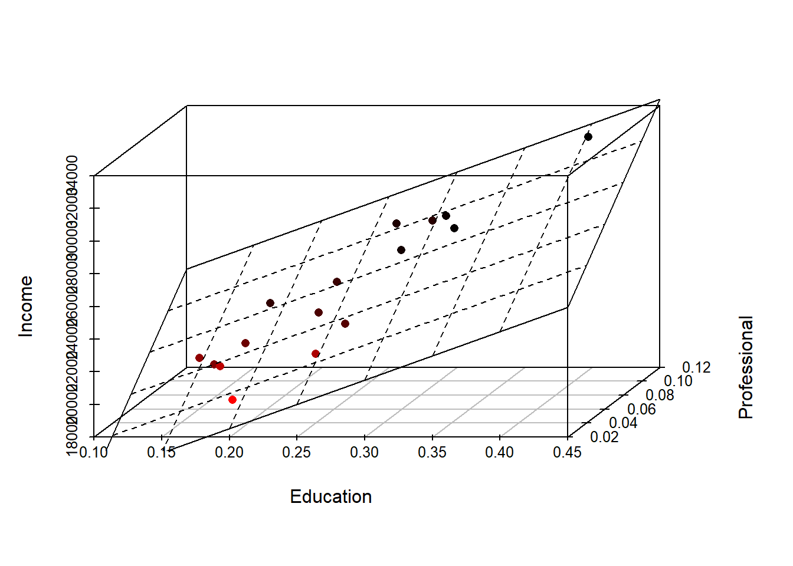
3.1 Reviewing the multivariate regression model summary
We can, of course, generate a full summary of the regression results as follows:
summary(M2)
Call:
lm(formula = Income ~ Education + Professional, data = dat)
Residuals:
Min 1Q Median 3Q Max
-1704.2 -360.6 -202.5 412.8 2006.7
Coefficients:
Estimate Std. Error t value Pr(>|t|)
(Intercept) 10907 1143 9.544 0.000000308 ***
Education 29684 7452 3.983 0.00156 **
Professional 84473 26184 3.226 0.00663 **
---
Signif. codes: 0 '***' 0.001 '**' 0.01 '*' 0.05 '.' 0.1 ' ' 1
Residual standard error: 1108 on 13 degrees of freedom
Multiple R-squared: 0.9223, Adjusted R-squared: 0.9103
F-statistic: 77.13 on 2 and 13 DF, p-value: 0.00000006148The interpretation of the model statistics is the same with a multivariate model as it is with a bivariate model. The one difference is that the extra regression coefficient \(\hat \beta_2\) (associated with the Professional variable) is added to the list of regression parameters. In our example, \(\hat \beta_2\) is significantly different from \(0\) (\(P\) = 0.0066).
One noticeable difference in the summary output is the presence of a Multiple R-squared statistic in lieu of the bivariate simple R-squared. Its interpretation is, however, the same and we can note an increase in the models’ overall \(R^2\) value. The \(F\)-statistic’s \(P\) value of \(0\) tells us that the amount of residual error from this multivariate model is significantly less than that of the simpler model, the mean \(\bar Y\). So far, things look encouraging.
The equation of the modeled plane is thus:
\(\widehat{Income}\) = 10907 + 29684 (\(Education\)) + 84473 (\(Professional\))
3.2 Comparing the two-variable model with the one-variable model
We can compare the two-variable model, M2, with the one-variable model (the bivariate model), M1. Using the anova() function. This test assesses whether or not adding the second variable, x2, significantly improves our ability to predict \(Y\). It’s important to remember that a good model is a parsimonious one. If an augmented regression model does not significantly improve our overall predictive ability, then we should always revert back to the simpler model.
anova(M1, M2)Analysis of Variance Table
Model 1: Income ~ Education
Model 2: Income ~ Education + Professional
Res.Df RSS Df Sum of Sq F Pr(>F)
1 14 28724435
2 13 15952383 1 12772052 10.408 0.006625 **
---
Signif. codes: 0 '***' 0.001 '**' 0.01 '*' 0.05 '.' 0.1 ' ' 1The \(P\) value is very small indicating that the reduction in residual error in model M2 over model M1 is significant. Model M2 looks promising so far.
3.3 Looking for multi-collinearity
When adding explanatory variables to a model, one must be very careful not to add variables that explain the same ‘thing’. In other words, we don’t want (nor need) to have two or more variables in the model explain the same variance. One popular test for Multi-collinearity is the Variance Inflation Factor (VIF) test. The VIF is computed for all regression parameters. For example, VIF for \(X_2\) is computed by first regressing \(X_1\) against all other predictors (in our example, we would regress \(X_1\) against \(X_2\)) then taking the resulting \(R^2\) and plugging it in the following VIF equation:
\[ VIF = \frac{1}{1 - R^2_1} \]
where the subscript \(1\) in \(R^2_1\) indicates that the \(R^2\) is for the model x1 ~ x2. The VIF for \(X_2\) is computed in the same way.
What we are avoiding are large VIF values (a large VIF value may indicate high multicollinearity). What constitutes a large VIF value is open for debate. Typical values range from 3 to 10, so VIF’s should be interpreted with caution.
We can use R’s vif() function to compute VIF for the variables Education and Professional
vif(M2) Education Professional
3.237621 3.237621 The moderately high VIF should be a warning. It’s always good practice to generate a scatter plot matrix to view any potential relationship between all variables involved. We can use R’s pairs() function to display the scatter plots:
pairs(dat, panel = panel.smooth)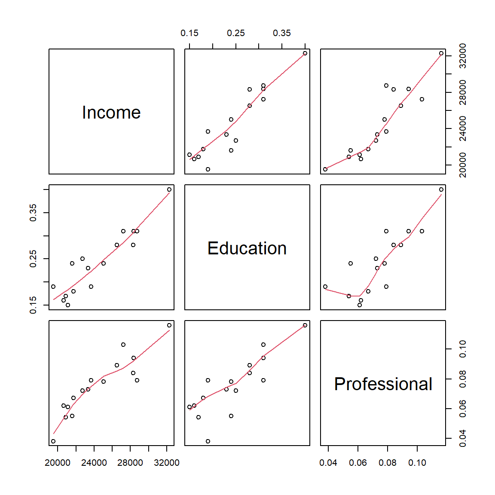
The function pairs() generates a scatter plot matrix of all columns in the dataframe. Three columns of data are present in our dataframe dat, therefore we have a 3x3 scatter plot matrix. We also add a LOWESS smoother (shown as a red polyline in each graph) by calling the option panel = panel.smooth. To interpret the output, just match each plot to its corresponding variable along the x-axis and y-axis. For example, the scatter plot in the upper right-hand corner is that for the variables Professional and Income. We are interested in seeing how the predictor variables Education and Professional relate to one another. The scatter plot between both predictor variables seem to indicate a significant relationship between the two predictors–this does not bode well for our two-predictor model. The fact that they seem to be correlated suggests that they may be explaining the same variance in \(Y\). This means that despite having promising model summary statistics, we cannot trust this model and thus revert back to our bivariate model M1.
4 Including categorical predictor variables
4.1 Two category variable
So far, we have worked with continuous variables. We can include categorical variables in our model as well. For example, let’s hypothesize that coastal counties might be conducive to higher incomes. We’ll create a new variable, x3, that will house one of two values, yes or no, indicating whether or not the county is on the coast or not.
x3 <- c("no", "no", "yes", "no", "yes", "no", "yes", "yes",
"no", "no", "no", "yes", "no", "yes", "yes", "yes")Alternatively, we could have encoded access to coast as binary values 0 and 1, but as we’ll see shortly, when we have non-numeric variables in a regression model, R will recognize such variables as factors.
We will add these values to our dat dataframe and name the new variable Coast:
dat$Coast <- x3The way a categorical variable such as Coast is treated in a regression model is by converting categories to binary values. In our example, the variable Coast has two categories, yes and no, which means that one will be coded 0 and the other 1. You could specify which is to be coded 0 or 1, or you can let R do this for you. Let’s run the regression analysis with our new variable (we will not use the variable Professional since we concluded earlier that the variable was redundant).
M3 <- lm( Income ~ Education + Coast, dat = dat)You may see a warning message indicating that the variable Coast was converted to a factor (i.e. it was treated as a categorical value). Conversely, if you want to explicitly tell R that the variable Coast should be treated as a category, you can enclose that variable in the as.factor() function as follows:
M3 <- lm( Income ~ Education + as.factor(Coast), dat = dat)The as.factor option is important if your categorical variable is numeric since R would treat such variable as numeric.
We can view the full summary as follows:
summary(M3)
Call:
lm(formula = Income ~ Education + as.factor(Coast), data = dat)
Residuals:
Min 1Q Median 3Q Max
-3054.9 -548.7 277.0 754.5 2211.3
Coefficients:
Estimate Std. Error t value Pr(>|t|)
(Intercept) 11861.6 1621.8 7.314 0.00000588 ***
Education 53284.9 7882.2 6.760 0.00001341 ***
as.factor(Coast)yes -671.7 1054.1 -0.637 0.535
---
Signif. codes: 0 '***' 0.001 '**' 0.01 '*' 0.05 '.' 0.1 ' ' 1
Residual standard error: 1464 on 13 degrees of freedom
Multiple R-squared: 0.8643, Adjusted R-squared: 0.8434
F-statistic: 41.39 on 2 and 13 DF, p-value: 0.000002303You’ll note that the regression coefficient for Coast is displayed as the variable Coastyes, in other words R chose one of the categories, yes to be coded as 1 for us. The regression model is thus:
\(\widehat{Income}\) = 11862 + 53285 \(Education\) -672 \(Coast_{yes}\)
The last variable is treated as follows: if the county is on the coast, then Coast takes on a value of 1, if not, it takes on a value of 0. For example, Androscoggin county which is not on the coast is expressed as follows where the variable Coast takes on the value of 0:
\(\widehat{Income}\) = 11862 + 53285 (23663) -672 (0)
The equation for Cumberland county which is on the coast is expressed as follows where the variable Coast takes on the value of 1:
\(\widehat{Income}\) = 11862 + 53285 (32277) -672 (1)
Turning our attention to the model summary output, one notices a relatively high \(P\)-value associated with the Coast regression coefficient. This indicates that \(\beta_2\) is not significantly different from \(0\). In fact, comparing this model with model M1 using anova() indicates that adding the Coast variable does not significantly improve our prediction of \(Y\) (income).
anova(M1, M3)Analysis of Variance Table
Model 1: Income ~ Education
Model 2: Income ~ Education + as.factor(Coast)
Res.Df RSS Df Sum of Sq F Pr(>F)
1 14 28724435
2 13 27854540 1 869895 0.406 0.5351Note the large \(P\) value of 0.54 indicating that \(\beta_{coast}\) does not improve the prediction of \(Y\).
4.2 Multi-category variable
For each category in a categorical variable, there are \((number\; of\; categories\; -1)\) regression variables added to the model. In the previous example, the variable Coast had two categories, yes and no, therefore one regression parameter was added to the model. If the categorical variable has three categories, then two regression parameters are added to the model. For example, let’s split the state of Maine into three zones–east, central and west–we end up with the following explanatory variable:
x4 <- c("W", "C", "W", "W", "E", "C", "C", "C", "W", "C",
"C", "C", "W", "E", "E", "W")We’ll add this fourth predictor variable we’ll call Geo to our dataset dat:
dat$Geo <- x4Our table now looks like this:
| Income | Education | Professional | Coast | Geo | |
|---|---|---|---|---|---|
| Androscoggin | 23663 | 0.19 | 0.079 | no | W |
| Aroostook | 20659 | 0.16 | 0.062 | no | C |
| Cumberland | 32277 | 0.40 | 0.116 | yes | W |
| Franklin | 21595 | 0.24 | 0.055 | no | W |
| Hancock | 27227 | 0.31 | 0.103 | yes | E |
| Kennebec | 25023 | 0.24 | 0.078 | no | C |
| Knox | 26504 | 0.28 | 0.089 | yes | C |
| Lincoln | 28741 | 0.31 | 0.079 | yes | C |
| Oxford | 21735 | 0.18 | 0.067 | no | W |
| Penobscot | 23366 | 0.23 | 0.073 | no | C |
| Piscataquis | 20871 | 0.17 | 0.054 | no | C |
| Sagadahoc | 28370 | 0.31 | 0.094 | yes | C |
| Somerset | 21105 | 0.15 | 0.061 | no | W |
| Waldo | 22706 | 0.25 | 0.072 | yes | E |
| Washington | 19527 | 0.19 | 0.038 | yes | E |
| York | 28321 | 0.28 | 0.084 | yes | W |
Now let’s run a fourth regression analysis using the variables Education and Geo:
M4 <- lm(Income ~ Education + Geo, dat = dat)Again, you might see a warning indicating that the variable Geo was flagged as a categorical variable and thus converted to a factor.
Let’s look at the model summary.
summary(M4)
Call:
lm(formula = Income ~ Education + Geo, data = dat)
Residuals:
Min 1Q Median 3Q Max
-3187.7 -473.2 1.9 642.7 1527.1
Coefficients:
Estimate Std. Error t value Pr(>|t|)
(Intercept) 12579.3 1217.9 10.329 0.000000252 ***
Education 50281.5 4630.6 10.858 0.000000146 ***
GeoE -1996.4 854.1 -2.337 0.0376 *
GeoW 135.8 688.2 0.197 0.8469
---
Signif. codes: 0 '***' 0.001 '**' 0.01 '*' 0.05 '.' 0.1 ' ' 1
Residual standard error: 1237 on 12 degrees of freedom
Multiple R-squared: 0.9106, Adjusted R-squared: 0.8882
F-statistic: 40.72 on 3 and 12 DF, p-value: 0.000001443As expected, the model added two regression parameters, one is called GeoE for counties identified as being on the east side of the state and GeoW for the counties identified as being on the west side of the state. Here are three examples showing how the equation is to be interpreted with different east/central/west designations.
For Androscoggin county, its location lies to the west, therefore the variable GeoE is assigned a value of 0 and GeoW is assigned a value of 1:
\(\widehat{Income}\) = 12579 + 50282 (23663) -1996 (0) + 136 (1)
For Hancock county, its location lies to the east, therefore the variable GeoE is assigned a value of 1 and GeoW is assigned a value of 0:
\(\widehat{Income}\) = 12579 + 50282 (27227) -1996 (1) + 136 (0)
For Kennebec county, its location lies in the center of the state, therefore both variables GeoE and GeoW are assigned a value of 0:
\(\widehat{Income}\) = 12579 + 50282 (25023) -1996 (0) + 136 (0)
Turning to the model summary results, it appears that one of the new regression coefficients, \(\beta_{GeoE}\) is significantly different from 0 whereas that of \(\beta_{GeoW}\) is not. This seems to suggest that Eastern counties might differ from other counties when it comes to per-capita income. We can aggregate the western and central counties into a single category and end up with a two category variable, i.e one where a county is either on the eastern side of the state or is not. We will use the recode() function to reclassify the values and add the new codes to our dat dataframe as a new variable we’ll call East.
dat$East <- recode(dat$Geo, " 'W' = 'No' ; 'C' = 'No' ; 'E' = 'Yes' ")Let’s look at our augmented table.
| Income | Education | Professional | Coast | Geo | East | |
|---|---|---|---|---|---|---|
| Androscoggin | 23663 | 0.19 | 0.079 | no | W | No |
| Aroostook | 20659 | 0.16 | 0.062 | no | C | No |
| Cumberland | 32277 | 0.40 | 0.116 | yes | W | No |
| Franklin | 21595 | 0.24 | 0.055 | no | W | No |
| Hancock | 27227 | 0.31 | 0.103 | yes | E | Yes |
| Kennebec | 25023 | 0.24 | 0.078 | no | C | No |
| Knox | 26504 | 0.28 | 0.089 | yes | C | No |
| Lincoln | 28741 | 0.31 | 0.079 | yes | C | No |
| Oxford | 21735 | 0.18 | 0.067 | no | W | No |
| Penobscot | 23366 | 0.23 | 0.073 | no | C | No |
| Piscataquis | 20871 | 0.17 | 0.054 | no | C | No |
| Sagadahoc | 28370 | 0.31 | 0.094 | yes | C | No |
| Somerset | 21105 | 0.15 | 0.061 | no | W | No |
| Waldo | 22706 | 0.25 | 0.072 | yes | E | Yes |
| Washington | 19527 | 0.19 | 0.038 | yes | E | Yes |
| York | 28321 | 0.28 | 0.084 | yes | W | No |
At this point, we could run a new regression with this variable, but before we do, we will control which category from the variable East will be assigned the reference category in the regression model as opposed to letting R decide for us. To complete this task, we will use the function factor().
dat$East <- factor(dat$East, levels = c("No", "Yes"))This line of code does three things: it explicitly defines the variable East as a factor, it explicitly defines the two categories, No and Yes, and it sets the order of these categories (based on the order of the categories defined in the level option). The latter is important since the regression function lm will assign the first category in the level as the reference.
We are now ready to run the regression analysis
M5 <- lm(Income ~ Education + East, dat)Let’s view the regression model summary.
summary(M5)
Call:
lm(formula = Income ~ Education + East, data = dat)
Residuals:
Min 1Q Median 3Q Max
-3114.59 -454.21 5.88 614.49 1600.85
Coefficients:
Estimate Std. Error t value Pr(>|t|)
(Intercept) 12646.2 1125.6 11.235 0.0000000459 ***
Education 50264.0 4455.3 11.282 0.0000000437 ***
EastYes -2058.9 763.3 -2.697 0.0183 *
---
Signif. codes: 0 '***' 0.001 '**' 0.01 '*' 0.05 '.' 0.1 ' ' 1
Residual standard error: 1190 on 13 degrees of freedom
Multiple R-squared: 0.9103, Adjusted R-squared: 0.8965
F-statistic: 65.93 on 2 and 13 DF, p-value: 0.0000001564This model is an improvement over the model M1 in that a bit more of the variance in \(Y\) is accounted for in M5 as gleaned from the higher \(R^2\) value. We also note that all regression coefficients are significantly different from 0. This is a good thing. The negative regression coefficient \(\hat {\beta_2}\) tells us that income is negatively related to the East-other designation. In other words, income tends to be less in eastern counties than in other counties.
Now let’s look at the lm summary plots to see if the assumptions pertaining to the residuals are met:
OP <- par(mfrow = c(2,2))
plot(M5, which = c(1:4))
par(OP)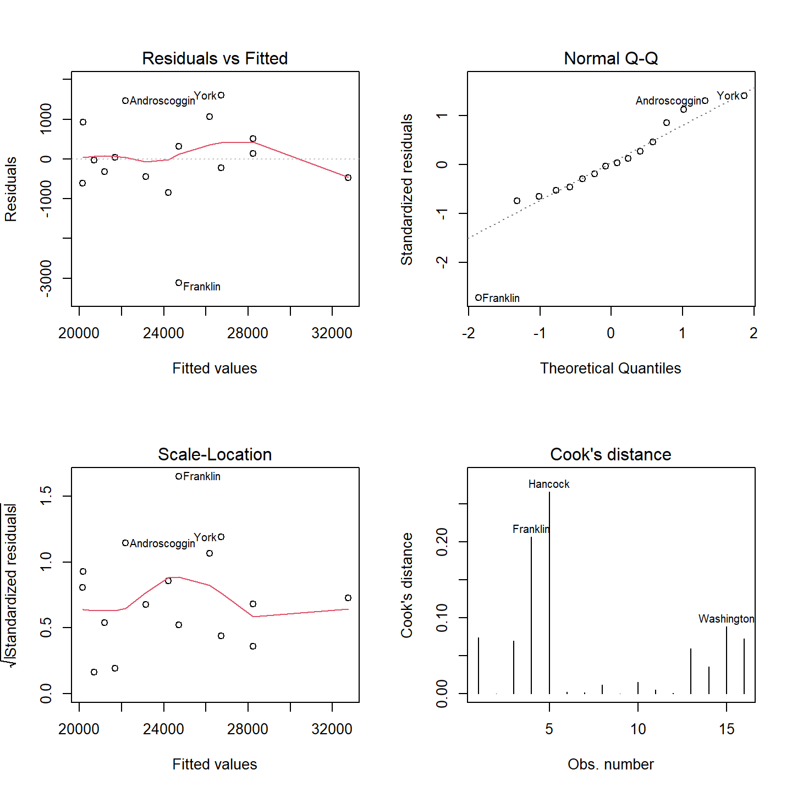
You may recall back when we looked at the residuals for model M1 that the Q-Q plot showed residuals near the tails of the distribution that diverged from the theoretical distribution. It appears that this divergence near the ends of the distribution is under control–that’s a good thing. There is also no strong evidence of heteroscadisticy and the Cooks’ Distance indicates that there is no disproportionately influential points (all values are less than 1).
Bear in mind that the geographic designation of East vs. Others may have more to do with factors associated with the two eastern most counties than actual geographic location. It may well be that our variable East is nothing more than a latent variable, but one that may shed some valuable insight into the prediction of \(Y\).
5 References
Freedman D.A., Robert Pisani, Roger Purves. Statistics, 4th edition, 2007.
Millard S.P, Neerchal N.K., Environmental Statistics with S-Plus, 2001.
McClave J.T., Dietrich F.H., Statistics, 4th edition, 1988.
Vik P., Regression, ANOVA, and the General Linear Model: A Statistics Primer, 2013.
Session Info:
R version 4.2.1 (2022-06-23 ucrt)
Platform: x86_64-w64-mingw32/x64 (64-bit)
attached base packages: stats, graphics, grDevices, utils, datasets, methods and base
other attached packages: gplots(v.3.1.3), scatterplot3d(v.0.3-41), boot(v.1.3-28), car(v.3.1-0) and carData(v.3.0-5)
loaded via a namespace (and not attached): Rcpp(v.1.0.9), rstudioapi(v.0.14), Rttf2pt1(v.1.3.8), knitr(v.1.40), magrittr(v.2.0.3), MASS(v.7.3-57), xtable(v.1.8-4), rlang(v.1.0.4), fastmap(v.1.1.0), stringr(v.1.4.1), highr(v.0.9), caTools(v.1.18.2), tools(v.4.2.1), xfun(v.0.32), KernSmooth(v.2.23-20), cli(v.3.3.0), extrafontdb(v.1.0), htmltools(v.0.5.3), gtools(v.3.9.3), yaml(v.2.3.5), abind(v.1.4-5), digest(v.0.6.29), bitops(v.1.0-7), evaluate(v.0.16), rmarkdown(v.2.16), stringi(v.1.7.8), pander(v.0.6.5), compiler(v.4.2.1), extrafont(v.0.18) and jsonlite(v.1.8.0)